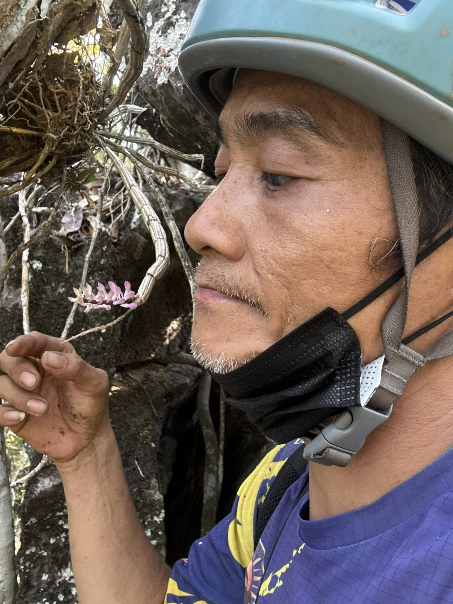

This website introduces a local tour guide from Gua Kelam, Perlis.
Name: Tham Ngui Long (Uncle Long)
Occupation: Tour Guide
Gua Kelam is a famous cave in Perlis known for its natural beauty and history. As a tour guide, he helps visitors explore Gua Kelam and learn about its unique features.
